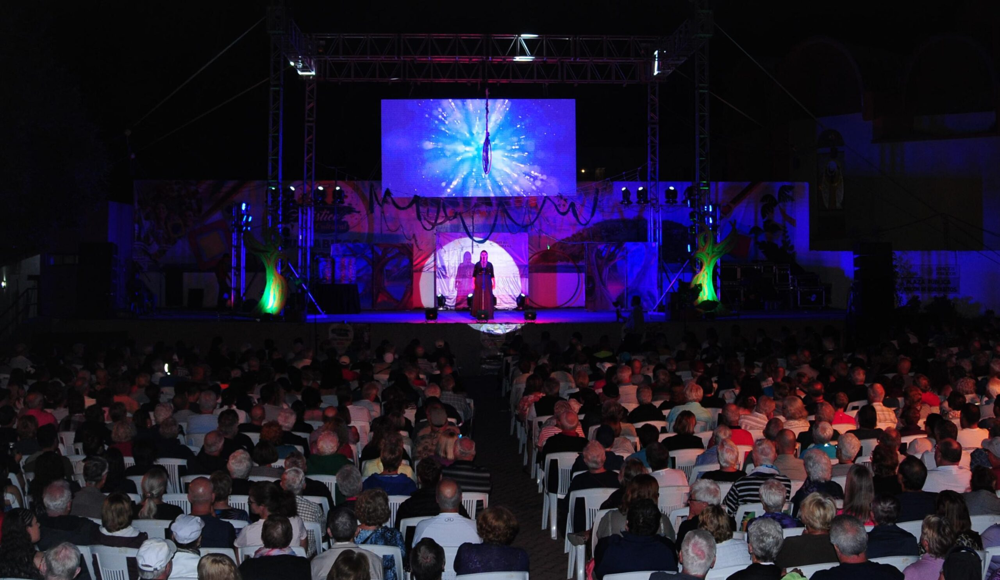

Febrero

Festival Artístico Cultural
Un festival tradicional que se celebra cada sábado del mes de febrero en la plaza principal de Guayabitos. Incluye música en vivo, danza, conciertos folklóricos, presentaciones artísticas y espectáculos culturales pensados tanto para visitantes como para locales.